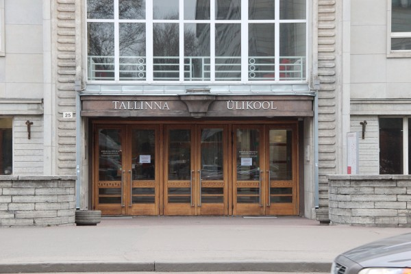

Veeb- ja meediaelemendid
See veebileht on loodud õppetöö raames ja ei sisalda mõistlikku sisu!
Veebis saab kasutada:
- Teksti
- Pealkirjad
- Tavatekst
- Loendid ehk listid
- Graafikat
- Meediat
Mõned mõisted
- List
- Loend, loendina järjestatud andmete kogum
- Tekst
- Kirjutatud või trükitud sõnade mõtestatud järjend
Gaudeamus
keskaegne tekst, Christian Wilhelm Kindleben (töötlus) / üliõpilaslaul
:,: Gaudeamus igitur juvenes dum sumus! :,: Post jucundam juventutem, post molestam senectutem :,: nos habebit humus! :,: :,: Ubi sunt, qui ante nos in mundo fuere? :,: Vadite ad superos, transite ad inferos, :,: ubi iam fuere. :,: :,: Vita nostra brevis est, brevi finietur. :,: Venit mors velociter, rapit nos atrociter, :,: nemini parcetur. :,: :,: Vivat academia, vivant professores! :,: Vivat membrum quodlibet, vivant membra quaelibet, :,: semper sint in flore! :,: :,: Vivant omnes virgines faciles, formosae! :,: Vivant et mulieres tenerae, amabiles, :,: atque laboriosae! :,: :,: Vivat et respublica et qui illam regit! :,: Vivat nostra civitas, maecenatum caritas, :,: quae nos hic protegit! :,: :,: Pereat tristitia, pereant osores! :,: Pereat diabolus, quivis antiburschius, :,: atque irrisores! :,:
Meediaelemendid veebis
Veebis saab kasutada pea kõiki samasid meediaelemendid, mida kasutame ka töölauarakendustes
Pildid
Kui pilt on lihtsalt illustratsioon - näiteks bänner

Kui pilt on tähenduslik - joonis, diagramm vms.


Heli
HTML5 toetab ka otse helifailide kasutamist. Toetatakse wav, mp3, ogg ja m4a faile.
Video
HTML5 toetab ka otse videofailide kasutamist. Toetatakse mp4, ogg ja WebM faile
Youtube video
Hobi
Mulle meeldib hobikorras tegeleda kunstiga, eriti meeldib mulle teha skulptuure. Minu kunstiteos on olnud ka Pärnu Uue Kunsti Muuseumis näitusel.